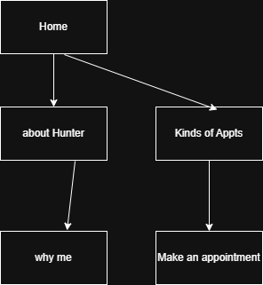

Project Overview: Hunter’s Guitar Lessons
Project Name:
Hunter’s Guitar Lessons
Project Overview:
This website highlights what Hunter can offer as a guitar instructor.
The purpose of the site is to showcase Hunter’s abilities, list available lesson times,
and allow users to book appointments directly on the website.
- Application and Purpose: To promote Hunter’s guitar lesson services and make it easier for students to schedule lessons.
- Intended Users: Individuals interested in learning to play guitar or improving their current skills.
- Overview of Content: Includes pages such as Home, About Hunter, Why Me, Different Kinds of Appointments, and Make an Appointment.
Client Information:
Site Map:

Wire Frame:

WireFrame for project.
Page Design:
Home Page
- Purpose: Landing page introducing the website.
- Audience: Customers.
- Content: Explains what the webpage is about.
- Data Entered: No
- Data Validation: No
- Hyperlinks/Dropdowns: Yes
- Actions: Navigate to other pages.
About Hunter
- Purpose: Introduce potential future customers to their teacher.
- Audience: Future customers.
- Content: Background information and experience.
- Data Entered: No
- Data Validation: No
- Hyperlinks/Dropdowns: Yes
- Actions: Navigate to other pages.
Why Me?
- Purpose: Explain why customers should choose Hunter as their guitar instructor.
- Audience: Customers.
- Content: Description of Hunter’s teaching style and skills.
- Data Entered: No
- Data Validation: No
- Hyperlinks/Dropdowns: Yes
- Actions: Navigate to other pages.
Different Kinds of Appointments
- Purpose: Show the different services Hunter offers.
- Audience: Future customers.
- Content: Descriptions of lesson types and services.
- Data Entered: No
- Data Validation: No
- Hyperlinks/Dropdowns: Yes
- Actions: Navigate to other pages.
Make an Appointment
- Purpose: Allow users to schedule a lesson with Hunter.
- Audience: Customers.
- Content: Interactive form to schedule appointment type and time.
- Data Entered: Yes
- Data Validation: Yes
- Hyperlinks/Dropdowns: Yes
- Actions: Submit appointment or navigate to other pages.
Dynamic Functionality on the Website:
The website will include several interactive features created with JavaScript. On the
“Make an Appointment” page, there will be an interactive form that allows users to
select their preferred lesson type, date, and time. The form will include basic
input validation to make sure all required fields are completed before submission.
On the “Different Kinds of Appointments” page, lesson options will be displayed in
collapsible sections so users can easily view or hide details about each type of lesson.
The “About Hunter” page will include a simple image gallery showing photos of Hunter
teaching and performing. These features will make the site more engaging and user-friendly.